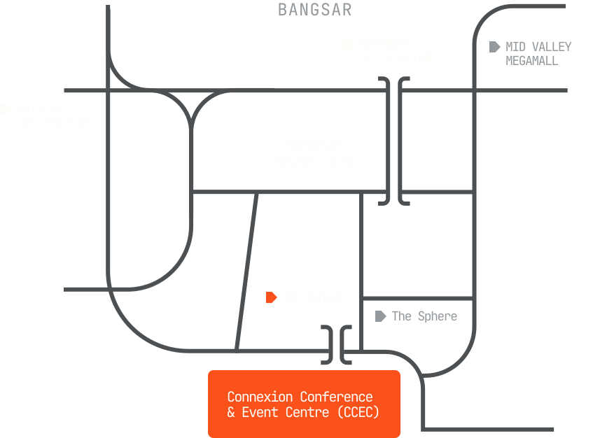

Connexion Conference & Event Centre (CCEC) in Bangsar South is a modern, purpose-built venue offering flexible event spaces, professional facilities, and convenient access to transport, dining, and hotels nearby.
The easiest way is via LRT to Universiti (KL Gateway) or Kerinchi. From Universiti, it’s a 5–7 minute walk or free weekday shuttle. From Kerinchi, it’s an 8–10 minute walk via a covered link bridge.
Grab / e-Hailing Pickup at KLIA
Follow the airport signs for “e-Hailing / Grab Pickup” after arrivals.
Take the KLIA Ekspres from KLIA (T1) or KLIA2 (T2) to KL Sentral. Trains run every 20 minutes and take about 28 minutes from KLIA (T1) or 31 minutes from KLIA2 (T2). Tickets cost RM55 one way or RM100 return (approx. US$14 / US$25).
From KL Sentral, take the LRT to Universiti (KL Gateway) or Kerinchi, then walk or use the shuttle bus to reach CCEC.
You can also take the RapidKL Bus T631 from Mid Valley Megamall to The Village, Bangsar South. Alternatively, take the Bangsar South Shuttle Bus from Universiti LRT station directly to CCEC (runs every 30 minutes on weekdays, 8 AM–8 PM).

Grab App (Recommended)
Grab is Malaysia’s main ride-hailing app, similar to Uber, and the easiest way to get a door-to-door ride.
Download it before you travel and sign up with your existing mobile number—no local SIM needed. At the airport, use the app to find the pickup point and book a ride with an upfront fare. You can pay by cash, card, or GrabPay.